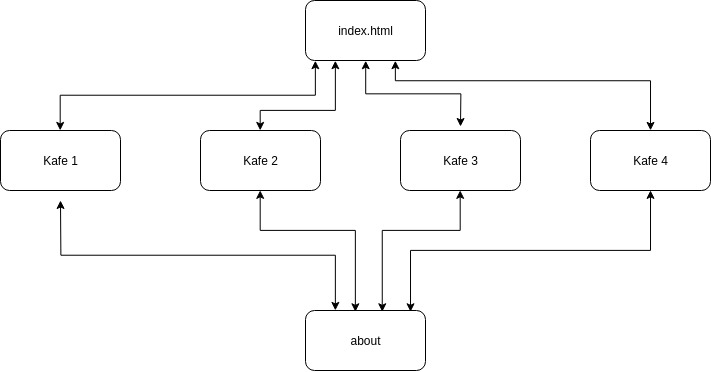

P2 Project Design
By Ane Hov, Finn Inderhaug Holme, Aleksander Wasaznik, Olav Markussen og Geir KuliaThis site is a group as assignment in IT2805 Webteknologi where the client is the honarble hip elite of Trondheim, looking for a life-changing cup of coffee in downtown Trondheim.
Administrative Details
Client Name: The honorable hip elite of Trondheim Website Name: kaffka Contanct Person: Ane Hov
Purpose, goals and audience
The site's purpose is to be a leading star for hip young coffee drinkers. The site will contain useful and artistic reviews of a selection of cafés in Trondheim city. What stronger purpose can there be than to discover something profound through a coffee drinking experience.
Using our power as influencers, we will guide young adults towards the right way of expressing their identity and uniqueness. The journey starts with a far-reaching coffee drinking experience.
Our service is for those who experience the Kafkaesque feeling of navigating the jungle of coffee recommendations from the online plebeians. These coffee lovers are the hip, urban, students looking for the best possible cup of coffee in downtown Trondheim. These elegant elites' taste is superior; only experts with the same sense of profound taste are able to address their despair – i.e. us.
Navigation Structure
The site will be structured to facilitate easy navigation between different artistic reviews of the Trondheim coffee scene. There will be a home page acting as a sort of landing page where all cafées are listed as well as links to the about and contact section. The about section introduces the authors and their knowledge in the field both using textual and graphical elements to capture their driven and creative approach towards perhaps the most appealing past time of this century. The landing page will list the cafées using images and a short description. On each cafe page, reviews are presented in a custom style representing our artistic interpretation of the café. It will also contain text sections structured in headlines and paragraphs, giving a thorough review. A selection of photos from the café will be displayed to elevate the text nicely.
Page Layout and Appearance
During a fruitful discussion among us hip yound coffe drinkers, we embraced the following desing, valuing clarity and a distinct look of each cafe above all else. Considering that the Trondheim elite seeks a lifechanging cup of coffee, this is the right move. Each cafe stands out for itself, but the pages are in fact tightly connected to eachother. This allows for an embrace of the current cafe, while at the same time provides the user with a minimum amount of clicks to find a new one. We focused on making the design reflect each indivudial cafe, respecting each bistro as the unique and beautiful place it is. The result is a genuine echo of impressions they gave us. The design reflects the hip young elite of Trondheim.

Font
Liberation Sans - Ultra thin on headings, bold on header/logo and thin/regular in paragraphs.
Color schemes
Background: rgb(208,203,209) and rgb(255,255,255)
Navbar and footer: rgb(235,235,235)
Text and links: rgb(0,0,0)
As the picture shows, it is possible to navigate from the landing page (index.html) to any of the reviews as well as the about us page. From each of the reviews it is possible to reach both the about us page, and the landing page but not the other reviews. That would just be confusing.
Content
The pages are separated into three categories: front page, about us, and the reviews. The position for about button might be changed.
Front page
The initial vision displayed to the soon-to-be-enlightened is the front page – index.html. It contains the primary information explaining the website, as well as links to café's that we have peer-reviewed. The information at this page is the Kaffka equivalent to the Ristretto: concise, quality and give you what you need. There will be a plural of these reviews. A primary example layout is shown in the figure below. Elements may vary as we are currently user-testing fonts, colours and design.
About us
Sometimes, lungo is more suitable than Ristretto. Therefore, we have made a more verbose about us section explaining who we are, our qualities and our motivation. A primary example layout is shown in the figure below. Elements may vary as we are currently user-testing fonts, colours and design.
Content
The last category is the actual reviews. It is what the coffee-lovers are looking for. It needs to be concise, to the point and has a sublime quality – the coffee equivalent to espresso. Each review is categorized by a similar style, where the content is in focus. Below is one examples. The material is meant as examples and will vary in the final product.
The maps and footer is displayed when scrolling down, as shown below.
Minimum Requirements
To fulfill the minimum Javascript requirements each café will get an artistic javascript interpretation. This will be embedded in a canvas on the page describing the café. Since we have four cafés, there will be four simple effects. This fulfills the minimum requirements. Since the artistic javascript renditions will depend highly on the style of the cafés to be visited, the customer deems them impossible to know ahead of time. But rest assured, they will be vibrant and magnificent. Since we are allowed to use google maps API (hope we still are), we will include the location of the cafés review. This will also be a tiny bit of javascript.
Plan
| Filename | Description | Caretaker | Deadline |
|---|---|---|---|
| /cafe/biscuits.html | Reviews of café Biscuits. | Finn | 2018-11-03 |
| /cafe/biscuits/biscuits.jpg | A picture of Biscuits. | Olav | 2018-10-20 |
| /cafe/biscuits/biscuits.js | A canvas demo for Biscuits. | Ane | 2018-10-13 |
| /cafe/cozylicious/cozylicious.jpg | A picture of Cozylicious. | Aleks | 2018-10-17 |
| /cafe/cozylicious/cozylicious.js | A canvas demo for Cozylicious. | Geir | 2018-11-02 |
| /cafe/cozylicious/index.html | Reviews of café Cozylicious. | Ane | 2018-11-07 |
| /cafe/escape/escape.jpg | A picture of Escapé. | Ane | 2018-11-03 |
| /cafe/escape/escape.js | A canvas demo for Escapé. | Geir | 2018-10-20 |
| /cafe/escape/index.html | Reviews of café Escapé. | Finn | 2018-10-13 |
| /cafe/work-work/index.html | Reviews of café Work Work. | Olav | 2018-10-17 |
| /cafe/work-work/work-work.jpg | A picture of Work Work. | Aleks | 2018-11-02 |
| /cafe/work-work/work-work.js | A canvas demo for Work Work. | Geir | 2018-11-07 |
| /css/main.css | CSS file containing all rules. | Aleks | 2018-11-03 |
| /index.html | Landing page. Lists caffe reviews. | Finn | 2018-10-20 |